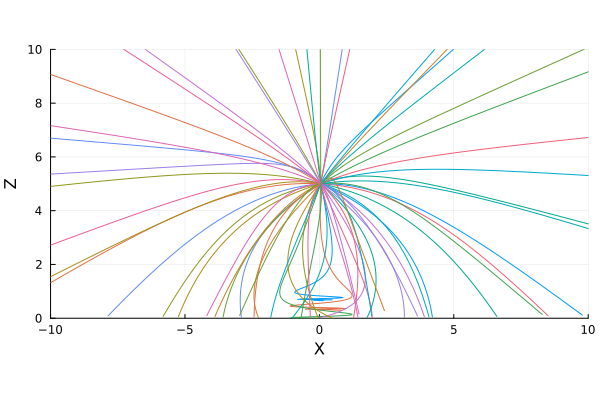
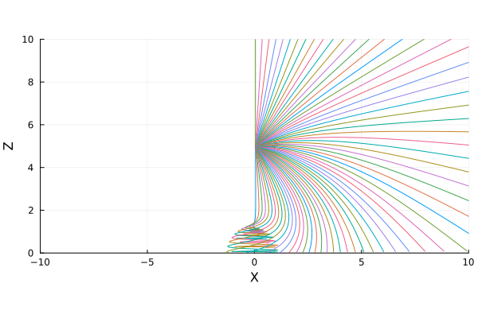

Disc emissivity
The emissivity of an accretion disc is the intensity of radiation coming from a given patch of the disc. In addition to the inherent thermal flux in the disc, GRRTs can be used to estimate reflected flux from a coronal source.
Gradus.source_to_disc_emissivity — Functionsource_to_disc_emissivity(m, N, A, x, g; Γ = 2)Compute the emissivity of a disc element with (proper) area A at coordinates x with metric m. Since the emissivity is dependent on the incident flux, the photon (geodesic) count N must be specified, along with the ratio of energies g (computed with energy_ratio) and photon index Γ.
The mathematical definition is
\[\varepsilon = \frac{N}{A g^\Gamma \gamma}, \]
where $\gamma$ is the Lorentz factor due to the velocity of the local disc frame. The velocity is currently always considered to be the Keplerian velocity.
Wilkins & Fabian (2012) and Gonzalez et al. (2017).
These functions are not meant to be directly interacted with. Instead, Gradus abstracts these definitions into profile structs. These structs bin the emissivity in various ways – for example RadialDiscProfile.
Calculating emissivity profiles
Depending on the geometry of the corona, the symmetries of the spacetime, and the type of disc being traced, there are sometimes very efficient schemes for calculating the emissivity profiles.
As a motivating example, consider the lamp post geometry with 64 rays. These may either be traced by sampling directions on the local sky of the emitter:

Or, alternatively, we may exploit the radial symmetry of the system, and sample fewer points in the two dimensional $x$-$z$ plane:

For detailed descriptions of these methods, see Emissivity profile algorithms.
Both of these methods can be used to estimate the emissivity profiles with trivial changes to switch between them
Gradus.emissivity_profile — Functionfunction emissivity_profile(
m::AbstractMetric,
d::AbstractAccretionGeometry,
model::AbstractCoronaModel;
kwargs...,
endCalculate the reflection emissivity profile of an accretion disc d around the spacetime m for an illuminating coronal model model.
Returns a RadialDiscProfile via (Monte-Carlo or uniform) sampling of the AbstractCoronaModel position and velocity distribution.
This function will attempt to automatically switch to use a better scheme to calculate the emissivity profiles if one is available. If not, the default algorithm is to estimate photon count $N$ and calculate the emissivity with source_to_disc_emissivity.
Common keyword arguments:
n_samples: the maximum number of individual geodesics to sample on the emitter's sky.
Please consult the documentation of a specific model (e.g. LampPostModel) to see algorithm specific keywords that may be passed.
All other keyword arguments are forwarded to tracegeodesics.
Example
m = KerrMetric()
d = GeometricThinDisc(Gradus.isco(m), 1000.0, π/2)
model = LampPostModel(h = 10.0)
profile = emissivity_profile(m, d, model; n_samples = 128)
# visualise as a function of disc radius
using Plots
plot(profile)Notes
The sampling is performed using an AbstractDirectionSampler, which samples angles on the emitters sky along which a geodesic is traced. The effects of the spacetime and the observer's velocity are taken into account by using tetradframe and the corresponding coordinate transformation for local to global coordinates.
This function assumes axis symmetry, and therefore always interpolates the emissivity as a function of the radial coordinate on the disc. If non-symmetric profiles are desired, consider using tracecorona with a profile constructor, e.g. VoronoiDiscProfile.
Using emissivity profiles
Radial disc profile
Gradus.RadialDiscProfile — TypeThe relativistic correction is calculated via
\[\tilde{A} = A \sqrt{g_{\mu,\nu}(x)}\]
Voronoi disc profile
Missing docstring for VoronoiDiscProfile. Check Documenter's build log for details.
Emissivity profile algorithms
In this case, we must be careful to weight the emissivity accordingly:
Gradus.point_source_equitorial_disc_emissivity — Functionpoint_source_equitorial_disc_emissivity(θ, g, A, γ; Γ = 2)Calculate the emissivity of a point illuminating source on the spin axis for an annulus of the equitorial accretion disc with (proper) area A. The precise formulation follows from Dauser et al. (2013), with the emissivity calculated as
\[\varepsilon = \frac{\sin \theta}{A g^\Gamma \gamma}\]
where $\gamma$ is the Lorentz factor due to the velocity of the local disc frame. The ratio of energies is $g$ (computed with energy_ratio), with $\Gamma$ being the photon index, and $\theta$ is the angle from the spin axis in the emitters from at which the geodesic was directed.
The $\sin \theta$ term appears to extend the result to three dimensions, since the Jacobian of the spherical coordinates (with $r$ fixes) yields a factor $\sin \theta$ in order to maintain point density. It may be regarded as the PDF that samples $\theta$ uniformly.
Dauser et al. (2013)